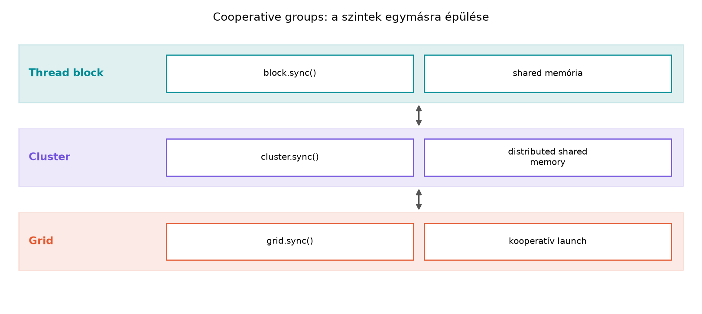

Az előző fejezetekben a párhuzamos végrehajtást a hardver fogalmaival
írtuk le: rácsok (grid), blokkok, szálak, warpok. Ez a modell rendkívül
hatékony, de megterhelő a programozó számára, amikor összetett
algoritmusokat kell megvalósítani. A __syncthreads() hívás
például látszólag egyszerű, de valójában csak a teljes blokkra
vonatkozik, és nem fejezi ki a kód olvasója számára, hogy a fejlesztő
pontosan milyen szálhalmazt akar szinkronizálni.
A CUDA 9-ben bevezetett Cooperative Groups (CG) egy programozási absztrakció, amely ezt a problémát oldja meg. A célja, hogy a szálak együttműködését explicit, típusos és újrafelhasználható módon lehessen kifejezni. A CG nem egy új hardveres képesség, hanem egy C++ sablonkönyvtár és programozási modell, amely a meglévő CUDA primitívekre épül. Lehetővé teszi, hogy a szálak egy csoportját egyetlen objektumként kezeljük, és ezen az objektumon szinkronizációs és kollektív műveleteket végezzünk.
Miért van erre szükség? Képzeljünk el egy olyan kernelt, ahol nem a
teljes blokkot, hanem egy 16 szálból álló alcsoportot kell
szinkronizálni. A hagyományos CUDA-ban ez csak maszkolt warp-szintű
primitívekkel (__syncwarp(mask), adatcseréhez
__shfl_sync(mask, …)) vagy körülményes,
__syncthreads-szel kombinált megoldásokkal volt lehetséges,
amelyek hajlamosak a hibára. A CG ezt a struktúrát emeli be a
típusrendszerbe.
A Cooperative Groups központi eleme a thread_group
fogalma. Egy csoport olyan szálak halmaza, amelyek együttműködhetnek
egymással: szinkronizálhatnak, adatot cserélhetnek, vagy kollektív
műveleteket (pl. redukció) hajthatnak végre.
A thread_group egy absztrakt alaposztály, amelyből a
konkrét, hardver által támogatott csoporttípusok származnak. A csoportok
két fő kategóriába sorolhatók:
thread_block (a blokk, amelyben a szál fut) vagy a
grid_group.tiled_partition, amely egy blokkot kisebb, warp-méretű vagy
más méretű csempékre oszt fel.A csoportok legfontosabb tulajdonságai: - Méret
(size()): A csoportban lévő szálak száma. -
Rang (thread_rank()): Az aktuális szál
indexe a csoporton belül. - Szinkronizáció
(sync()): A csoport összes szálának
szinkronizálása.
Fontos megérteni a konvergencia fogalmát. Egy
csoport szinkronizálása csak akkor definiált, ha a csoport összes tagja
eléri a sync() hívást. Ha a csoport tagjai nem mind érik el
a szinkronizációs pontot, a viselkedés nem definiált (holtpont vagy
hibás eredmény). Kivétel a coalesced_group, amelynek tagjai
definíció szerint az éppen együtt végrehajtó, aktív szálak.
A hagyományos __syncthreads() egyetlen műveletet ismer:
a teljes blokk szinkronizálását. A Cooperative Groups ezt kiterjeszti. A
cg::sync(group) függvény vagy a group.sync()
tagfüggvény az adott csoportra vonatkozó szinkronizációt hajt végre.
Például:
// Teljes blokk szinkronizálása
cooperative_groups::this_thread_block().sync();
// Egy 16 szálból álló csempe szinkronizálása
auto tile = cooperative_groups::tiled_partition<16>(cooperative_groups::this_thread_block());
tile.sync();A szinkronizáción túl a CG kollektív műveleteket is biztosít. Ezek olyan gyakori párhuzamos minták, amelyeket a gyártó rendkívül optimalizáltan implementált az adott hardverre. A legfontosabbak:
cg::reduce(group, value, op)
(#include <cooperative_groups/reduce.h>): érték
redukálása (összeg, maximum stb.) a csoporton belül. A
cg::plus<T>(), cg::less<T>(),
cg::greater<T>(), cg::bit_and<T>()
stb. funktorokkal használható. Csak
thread_block_tile és coalesced_group
csoportra hívható; thread_block-ra nem.cg::inclusive_scan(group, value, op) /
cg::exclusive_scan(...)
(<cooperative_groups/scan.h>): prefix összeg (scan),
ugyancsak tile-ra és coalesced csoportra.tile.any(pred), tile.all(pred),
tile.ballot(pred), tile.shfl(val, src),
tile.shfl_down(...); ezek a korábbi warp-intrinsicek
típusos megfelelői (a 32-nél nagyobb csempéken a shuffle/ballot nem
érhető el).cg::invoke_one(group, f)
(egyetlen szál hajtja végre), cg::memcpy_async és
cg::wait (aszinkron másolás).A pontos készlet verziófüggő; fordítás előtt ellenőrizd a használt
CUDA Toolkit Programming Guide „Cooperative Groups” fejezetében. A
kollektívák mögött a hardvernek megfelelő implementáció fut: tile-on a
cg::reduce shuffle-öket (egész típusokra CC 8.0-tól
hardveres warp-redukciót) használhat, így a programozónak nem kell
kézzel kezelnie a maszkokat. A blokk szintű redukciót ettől függetlenül
két lépcsőben, shared memoryval kell felépíteni (lásd a labort).
A gyakorlatban a leggyakrabban használt csoporttípusok a következők:
cooperative_groups::thread_block:
Ez a legalapvetőbb csoport. Minden szál pontosan ugyanazt a blokkot
reprezentáló objektumot kapja meg a cg::this_thread_block()
függvény hívásával. Ez a csoport block.sync() hívással a
__syncthreads() típusosabb, kifejezőbb megfelelője.
#include <cooperative_groups.h>
namespace cg = cooperative_groups;
__global__ void kernel() {
cg::thread_block block = cg::this_thread_block();
// ...
block.sync();
}cooperative_groups::thread_block_tile:
Ez a csoport egy (jellemzően warp-méretű, 32 szálas) csempét
reprezentál, a mérete fordítási idejű 2-hatvány. Létrehozásához a
tiled_partition függvényt használjuk. A
thread_block_tile különösen hatékony, mert műveletei
gyakran shuffle-öket használnak, elkerülve a lassabb shared memory-s
köröket.
cg::thread_block block = cg::this_thread_block();
cg::thread_block_tile<32> warp_tile = cg::tiled_partition<32>(block);cooperative_groups::thread_block_tile<Szám>
(Nem warp-méretű csempe): Bár a hardver warpokban hajt végre, a
CG lehetővé teszi 32-nél kisebb 2-hatvány méretű csempék létrehozását is
(1, 2, 4, 8, 16 szál); ezek warpon belüli részcsoportok. A
warpnál nagyobb statikus csempék (pl. 64, 128) a CUDA
11-ben block_tile_memory munkaterülettel, újabb verziókban
anélkül is elérhetők (a pontos verziót a használt Toolkit Programming
Guide-jából kell rögzíteni), és korlátozott
funkcionalitással érhetők el (pl. nincs shuffle/ballot), a
szinkronizáció shared memoryn és barrieren át történik. A következő
példák ezért 32 szálas vagy kisebb csempét használnak.
// 16 szálból álló csempe (fél warp)
auto tile16 = cg::tiled_partition<16>(block);cooperative_groups::grid_group: Ez
az egész gridet reprezentálja. Ahhoz, hogy egy grid-szintű csoportot
szinkronizálni lehessen, a kernelt Cooperative Launch
API-val kell indítani (cudaLaunchCooperativeKernel), és a
hardvernek támogatnia kell a grid-szintű szinkronizációt. Erre a
következő alfejezetben térünk ki részletesen.
cooperative_groups::multi_grid_group és
cluster_group: A multi_grid_group
több GPU-t fogott össze, de a multi_grid_group és a hozzá
tartozó cudaLaunchCooperativeKernelMultiDevice a CUDA
11.3-tól elavult (a CUDA 13-ban eltávolításra került), ezért újonnan nem
használjuk. A cg::cluster_group a thread block clustereket
fogja össze, a Hopper-generációtól (CC 9.0, CUDA 12.0 vagy újabb) érhető
el; részletesen a következő alfejezetben.
tiled_partition működéseA tiled_partition az egyik leggyakrabban használt eszköz
a CG-ben. Célja, hogy egy nagyobb csoportot kisebb, független
alcsoportokra bontson. Ez szükséges például akkor, ha egy blokkon belül
több független számítási folyamot akarunk futtatni, vagy ha az adatokat
a warpokhoz képest finomabb szemcsézettséggel akarjuk kezelni.
A függvény szignatúrája:
template <unsigned int Size, typename ParentGroup>
auto tiled_partition(const ParentGroup& parent);A Size itt a kívánt csempe mérete 2 hatványaként. A
ParentGroup tipikusan egy thread_block. A
függvény visszaad egy thread_block_tile<Size> típusú
objektumot, amelynek a thread_rank() értékei a szülő
csoporton belüli elrendezés szerint alakulnak.
Fontos szabály: A tiled_partition
hívásának a szülő csoport minden tagjára nézve ugyanabban a végrehajtási
pontban kell megtörténnie, és a szülő csoport minden tagjának részt kell
vennie benne. Ha csak néhány szál hívja meg egy divergens ágban, a
viselkedés nem definiált. (A this_thread_block() ezzel
szemben triviális, bárhol hívható; kivétel a
cg::coalesced_threads(), amely éppen az adott pillanatban
aktív szálakból épít csoportot.)
A következő laborban egy gyakori mintát valósítunk meg: egy blokkon
belüli redukciót, amelyet két lépcsőben hajtunk végre. Először a 32
szálból álló warpok egy thread_block_tile segítségével
kiszámítják a részösszegüket, majd a warp-vezetők a shared memoryba
írják azokat, és az első warp (ismét tile-lal) összegzi a 8
részeredményt; a blokk szinkronizációját a thread_block
csoport végzi.
tiled_partition<32>-vel: sor =
meta_group_rank(), oszlop = thread_rank();
csempénként 4096, blokkonként 32768
(,
32 blokk, minden bemenet 1,0)Ez a minta kiválóan demonstrálja a CG előnyeit: a warp-szintű
művelethez nem kell __shfl_down_sync intrinsiceket és aktív
maszkokat használnunk, hanem a cg::reduce függvényt hívjuk
meg (csempén). A blokk-szintű szinkronizációhoz pedig a
block.sync() metódust használjuk.
// File: gpu030_cooperative_groups_basic.cu
// Nyelv: CUDA C++ (C++17)
// Fordító: nvcc, CUDA Toolkit 12.x (a pontos verzió a futtatáskor rögzítendő)
#include <cuda_runtime.h>
#include <cooperative_groups.h>
#include <cooperative_groups/reduce.h>
#include <algorithm>
#include <cmath>
#include <cstdio>
#include <cstdlib>
#include <vector>
namespace cg = cooperative_groups;
// A könyv kanonikus CUDA_CHECK makrója (1.2)
#define CUDA_CHECK(call) \
do { \
cudaError_t err_ = (call); \
if (err_ != cudaSuccess) { \
fprintf(stderr, "CUDA hiba (%s:%d): %s\n", __FILE__, __LINE__, \
cudaGetErrorString(err_)); \
exit(EXIT_FAILURE); \
} \
} while (0)
// Kernel: 1D blokk, 1D grid
// A grid 1D, a blokk 256 szálat tartalmaz.
// Feladat: egy N elemű tömb összegzése.
__global__ void cooperative_reduction_kernel(const float *input, float *output,
unsigned int n) {
// 1. A blokk-csoport lekérése
cg::thread_block block = cg::this_thread_block();
// 2. Globális indexszámítás grid-stride loop-pal
float sum = 0.0f;
for (unsigned int idx = blockIdx.x * blockDim.x + threadIdx.x; idx < n;
idx += gridDim.x * blockDim.x) {
sum += input[idx];
}
// 3. Warp-szintű redukció tiled_partition segítségével
// A 256 szálas blokkot 32 szálas csempékre (warpokra) osztjuk.
cg::thread_block_tile<32> tile = cg::tiled_partition<32>(block);
// A cg::reduce a warp-szintű shuffle-ökre van optimalizálva.
// A cg::plus<float>() egy bináris műveleti funktor.
float warp_sum = cg::reduce(tile, sum, cg::plus<float>());
// 4. Blokk-szintű redukció
// Csak a warp-vezetők (tile.thread_rank() == 0) írnak a shared memory-ba.
__shared__ float shared_warpsum[8]; // 256 / 32 = 8 warp
if (tile.thread_rank() == 0) {
shared_warpsum[tile.meta_group_rank()] = warp_sum;
}
// 5. Blokk-szintű szinkronizáció
// A block.sync() váltja ki a __syncthreads() hívást.
block.sync();
// 6. Az első warp összegzi a 8 részeredményt.
// A teljes tile (32 szál) részt vesz a redukcióban, az üres helyeket 0-val
// töltjük, így nincs divergens csoportképzés.
if (tile.meta_group_rank() == 0) {
float v = (tile.thread_rank() < 8) ? shared_warpsum[tile.thread_rank()] : 0.0f;
float final_sum = cg::reduce(tile, v, cg::plus<float>());
if (tile.thread_rank() == 0) {
output[blockIdx.x] = final_sum;
}
}
}
int main() {
const unsigned int N = 1 << 20; // 1M elem
const unsigned int BLOCK_SIZE = 256;
const unsigned int GRID_SIZE = 32; // 32 blokk
// Host oldali inicializálás (ellentétben az éles környezetekkel, itt
// izolált, generált adatokat használunk)
std::vector<float> h_input(N);
std::vector<float> h_output(GRID_SIZE);
float expected_sum = 0.0f;
for (unsigned int i = 0; i < N; ++i) {
h_input[i] = 1.0f; // Egyszerű bemenet a könnyű ellenőrzésért
expected_sum += h_input[i];
}
// Várt eredmény: N * 1.0f = 1048576.0f
// Device allokációk
float *d_input, *d_output;
CUDA_CHECK(cudaMalloc(&d_input, N * sizeof(float)));
CUDA_CHECK(cudaMalloc(&d_output, GRID_SIZE * sizeof(float)));
// Adatmásolás host -> device
CUDA_CHECK(cudaMemcpy(d_input, h_input.data(), N * sizeof(float),
cudaMemcpyHostToDevice));
// Megjegyzés: a kernel nem használ grid_group-ot, ezért nem kell
// cooperative launch; a hagyományos <<<>>> indítás megfelel.
// Warm-up (5 iteráció)
for (int i = 0; i < 5; ++i) {
cooperative_reduction_kernel<<<GRID_SIZE, BLOCK_SIZE>>>(d_input, d_output, N);
}
CUDA_CHECK(cudaGetLastError());
CUDA_CHECK(cudaDeviceSynchronize());
// Időmérés: 20 ismétlés, külön-külön eseményekkel
const int REPS = 20;
float times[REPS];
cudaEvent_t ev_start, ev_stop;
CUDA_CHECK(cudaEventCreate(&ev_start));
CUDA_CHECK(cudaEventCreate(&ev_stop));
for (int r = 0; r < REPS; ++r) {
CUDA_CHECK(cudaEventRecord(ev_start));
cooperative_reduction_kernel<<<GRID_SIZE, BLOCK_SIZE>>>(d_input, d_output, N);
CUDA_CHECK(cudaEventRecord(ev_stop));
CUDA_CHECK(cudaEventSynchronize(ev_stop));
CUDA_CHECK(cudaGetLastError());
CUDA_CHECK(cudaEventElapsedTime(×[r], ev_start, ev_stop));
}
float mean = 0.0f, var = 0.0f;
for (int r = 0; r < REPS; ++r) mean += times[r];
mean /= REPS;
for (int r = 0; r < REPS; ++r) var += (times[r] - mean) * (times[r] - mean);
float sd = std::sqrt(var / (REPS - 1));
std::sort(times, times + REPS);
float median = 0.5f * (times[REPS / 2 - 1] + times[REPS / 2]);
// Effektív sávszélesség: beolvasott bájtok / idő = 4*N bájt / (medián ms)
double gbps = (double)N * sizeof(float) / (median * 1e-3) / 1e9;
CUDA_CHECK(cudaEventDestroy(ev_start));
CUDA_CHECK(cudaEventDestroy(ev_stop));
// Eredmény visszaolvasása
CUDA_CHECK(cudaMemcpy(h_output.data(), d_output, GRID_SIZE * sizeof(float),
cudaMemcpyDeviceToHost));
float actual_sum = 0.0f;
for (float v : h_output) {
actual_sum += v;
}
printf("Várt eredmény: %.1f\n", expected_sum);
printf("Számított eredmény: %.1f\n", actual_sum);
printf("Különbség: %.6f\n", std::fabs(expected_sum - actual_sum));
printf("Kernel: medián %.4f ms, szórás %.4f ms, ~%.1f GB/s\n", median, sd, gbps);
// Tisztítás
CUDA_CHECK(cudaFree(d_input));
CUDA_CHECK(cudaFree(d_output));
return 0;
}A labor szerződésnek megfelelően a build parancsot és a mérési környezetet rögzíteni kell.
Build parancs:
nvcc -arch=sm_86 -std=c++17 -O3 -o gpu030_lab gpu030_cooperative_groups_basic.cuFuttatási parancs:
timeout 60 ./gpu030_labA kód a mérést (5 warm-up, majd 20 ismétlés, medián és szórás) elvégzi, de a könyv írásakor a példát nem futtattuk, ezért mért érték nem szerepel. A futtató tölti ki a táblázatot a saját környezetéből.
Rögzítendő környezet: GPU modell, compute capability
(a -arch ennek megfelelően), driver, CUDA Toolkit,
operációs rendszer, power limit, ECC be/ki, háttérterhelés
(nvidia-smi).
| Metrika | Várt (modellből) | Mért |
|---|---|---|
| Végeredmény | 1048576,0 (N = 2^20, minden elem 1,0) | <mért – kitöltendő> |
| Futásidő (medián, szórás) | nincs számolt várt érték | <mért – kitöltendő> |
| Effektív sávszélesség | 4 MiB / idő (képlet) | <mért – kitöltendő> |
| Regiszter/szál, shared memory | shared: 8 × 4 B = 32 B (statikus); regiszterszám nem becsülhető | <mért – kitöltendő>
(--ptxas-options=-v vagy Nsight Compute) |
Megjegyzés a mért és várt adatokról: a várt
végeredmény 1048576.0f. A lebegőpontos összeg ebben az
esetben pontos, mert minden részösszeg egész szám és kisebb, mint 2^24,
így a float pontosan ábrázolja; az összegzés sorrendje
ezért nem számít. A labor célja a minta verifikálása, nem a teljesítmény
optimalizálása.
A Cooperative Groups használata során a kezdők gyakran elkövetnek néhány jellegzetes hibát. Az alábbiakban ezeket tekintjük át a megelőzésük módjával együtt.
A leggyakoribb hiba, amikor a tiled_partition hívása egy
if-feltételben történik meg, és a szülő csoport nem minden
tagja éri el. (A this_thread_block() hívása ártalmatlan,
bárhol megtehető.)
Hibás minta:
__global__ void wrong_kernel(int *data) {
cg::thread_block block = cg::this_thread_block();
if (block.thread_rank() < 32) {
auto tile = cg::tiled_partition<16>(block); // HIBA! A többi szál nem hívja meg
// ...
}
}Helyes megoldás: A csempét mindig a végrehajtási ágakon kívül, a kernel elején hozzuk létre.
__global__ void correct_kernel(int *data) {
cg::thread_block block = cg::this_thread_block();
auto tile = cg::tiled_partition<16>(block); // Minden szál meghívja
if (block.thread_rank() < 32) {
// Csak az első két 16-os csempe dolgozik; tile.sync() itt biztonságos,
// mert egy 16-os csempe minden tagja vagy belép, vagy egyik sem.
tile.sync();
}
}Statikus méretű csempénél a blokkméretnek oszthatónak kell lennie a
csempe méretével; így minden szál pontosan egy csempe tagja. (A
thread_block_tile osztálynak nincs is_valid()
tagja; a grid_group::is_valid() azt jelzi, hogy a kernel
kooperatív indítással fut-e, vagyis a grid.sync()
használható.)
A csoportobjektumok kicsik, a másolásuk olcsó. A hivatalos javaslat
indoka a szeletelés (slicing) elkerülése és a statikus
típus megtartása: ha egy thread_block_tile<32>
objektumot érték szerint egy thread_group paraméterű
függvénynek adunk át, az objektum az általánosabb alaptípusra
szeletelődik, és a csempe-specifikus (fordítási idejű, gyorsabb)
műveletek elvesznek. Ezért a csoportokat referencia szerint, vagy
általános kódnál sablonparaméterként adjuk át.
Ajánlott minta:
__device__ void my_collective(const cg::thread_block& block) {
// Műveletek a block-on
block.sync();
}
__global__ void kernel() {
cg::thread_block block = cg::this_thread_block();
my_collective(block); // Referencia szerint adjuk át
}
// Statikus típust megtartó, általános változat:
template <typename Group>
__device__ void my_generic(const Group& g) {
g.sync();
}__syncthreads() és block.sync() keveréseBár a block.sync() technikailag ugyanazt a hardveres
utasítást hajtja végre, mint a __syncthreads(), a kód
olvashatósága és karbantarthatósága érdekében kerüljük a keverésüket. Ha
elkezdtük a Cooperative Groups-ot használni, következetesen használjuk a
block.sync()-ot. Ez megakadályozza, hogy egy jövőbeli
refaktorálás során egy nem blokk-szintű csoportra tévedésből
__syncthreads()-et hívjunk, ami a teljes blokkot várná, és
deadlockot okozhatna.
cg::reduce
rossz használataA cg::reduce kollektív művelet: a csoport minden
tagjának meg kell hívnia, különben a viselkedés nem definiált (holtpont
vagy hibás eredmény). Ez különösen akkor veszélyes, ha a redukciót egy
olyan if-ben helyezzük el, amelyet nem minden szál lát.
Helyes megoldás a labor példánkból: A második
lépcsőben nem if (block.thread_rank() < 8) ágon belül
hívjuk a cg::reduce-t: az első warp teljes, 32 szálas
tile-ja vesz részt, a 8 részeredményen túli lane-ek 0-t adnak. Így nincs
divergens csoportképzés. Ha mégis csak az aktív szálakra kell
kollektívát hívni, a cg::coalesced_threads() az adott
pillanatban együtt végrehajtó szálakból épít csoportot; ezt tudatosan, a
divergencia ismeretében használjuk, és a kollektívát a csoport minden
tagja hívja meg.
Ebben az alfejezetben bevezettük a Cooperative Groups modellt, amely
a CUDA programozás egyik legfontosabb absztrakciója a modern, komplex
kernelek írásához. Megismertük a csoportok típusait, a
thread_block és tiled_partition használatát,
valamint a cg::reduce kollektív műveletet. A laborban egy
kétszintű redukciót valósítottunk meg, ahol a warp-szintű és
blokk-szintű együttműködést is a CG eszközeivel írtuk le.
A következő alfejezetben az itt megszerzett tudásra építve a thread
block clusterekre lépünk tovább; a grid-szintű szinkronizáció
(grid.sync()) ezt követően, a kooperatív indítás témájánál
kerül elő.
Önellenőrző kérdések:
cg::thread_block_tile csoportra
meghívott cg::reduce a kézzel írt,
__shfl_down_sync-ra épülő warp-redukcióval szemben?thread_block-ot szeretnénk
32 szálas csempékre osztani a tiled_partition<32>
segítségével. Hány csempét kapunk, és mi lesz a
tile.meta_group_rank() és a tile.thread_rank()
értéke a blokk utolsó szálán?Megoldások röviden: (1) implicit:
this_thread_block(); explicit:
tiled_partition<16>(block). (2) típusos, a hardverhez
illesztett implementációt használ, kevesebb hibalehetőség (maszkok). (3)
1024 / 32 = 32 csempe; az utolsó szálon
meta_group_rank() = 31,
thread_rank() = 31.